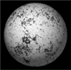
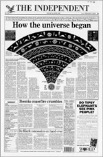
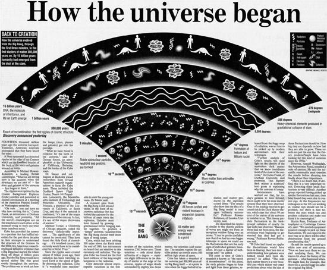
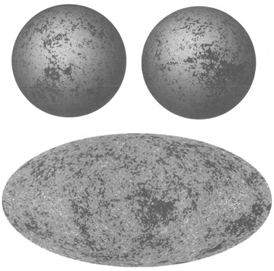

If you want to make an apple pie from scratch, you must first create the universe.
CARL SAGAN
What continues to amaze me is that human beings have had the audacity to conceive a theory of creation and that now we are able to test that theory.
GEORGE SMOOT
We argue for the Big Bang model as the most persuasive and inclusive physical theory of the cosmos at this time because the model has predictive ability (i.e. it encompasses simultaneously many and diverse astronomical observations) and in particular because, as any viable theory must, it continues to survive the challenges of observational falsification…In the case of the Big Bang, not only has the model survived over a number of decades, but the case for it has become progressively stronger.
RALPH ALPHER and ROBERT HERMAN
Ten or twenty billion years ago, something happened—the Big Bang, the event that began our universe. Why it happened is the greatest mystery we know. That it happened is reasonably clear.
CARL SAGAN

The Big Bang model of the universe is arguably the most important and glorious scientific achievement of the twentieth century. However, the Big Bang model can also be considered to be very ordinary in the way it was conceived, developed, explored, tested, proved and eventually accepted. In these respects it has much in common with ideas in many less glamorous areas of science. The development of the Big Bang model was an archetypal example of the scientific method in action.
Just like many other areas of science, cosmology started by attempting to explain things that had previously been in the domain of myth or religion. The earliest cosmological models were useful, but not perfect, and very soon inconsistencies and inaccuracies began to emerge. A new generation of cosmologists offered an alternative model and campaigned in favour of their view of the universe, while the scientific establishment defended the existing model. Both the establishment and the rebel camp argued their cases, drawing on theory, experiment and observation, sometimes working for decades before making a breakthrough, occasionally changing the scientific landscape overnight with a serendipitous discovery. Both sides made the most of the latest technology—everything from lenses to satellites—in an effort to find the pivotal piece of evidence that would prove their model. Eventually, the case in favour of the new model became overwhelming, and cosmology underwent a revolution as the establishment discarded its old model in favour of the new model. Most former critics of the new model became convinced and switched their allegiance, and the paradigm shift was complete.
Importantly, in the majority of scientific battles there is no paradigm shift. Typically, a newly proposed scientific model is soon found to be flawed, and the establishment model remains in place as the best explanation of reality. It is reassuring that this is the case, otherwise science would be constantly revising its position and it would be an unreliable framework for exploring and understanding the universe. However, when a paradigm shift does occur, it is one of the most extraordinary moments in the history of science.
The path from an old paradigm to a new one may be several decades long and may require contributions from dozens of scientists. This gives rise to an interesting question: who deserves the credit for the new paradigm? This issue was neatly explored in the play Oxygen by Roald Hoffmann and Carl Djerassi. The play is based around the retro-Nobel, a fictional award given in recognition of a discovery that took place before the founding of the Nobel Academy. A committee meets and soon agrees that the award should be given for the discovery of oxygen. Unfortunately, the members cannot agree who deserves credit for the discovery. Was it the Swedish apothecary Carl Wilhelm Scheele, because he was the first to synthesise and isolate the gas? Or was it the English Unitarian minister Joseph Priesdey, because he was the first to publish the discovery and provide details of his research? Or was it the French chemist Antoine Lavoisier, because he properly understood that oxygen was not merely a version of air (‘dephlogisticated air’), but an entirely new element? The play discusses the question of priority at length, travelling back in time to allow each man to argue his case, which serves only to reveal the complexities of attributing credit.
If the question of who deserves the credit for discovering oxygen is hard to answer, then the question of who invented the Big Bang model is virtually impossible. Developing, testing, revising and proving the complete Big Bang model required a number of theoretical, experimental and observational stages, and each one has its own heroes. Einstein deserves some credit for explaining gravity through his theory of general relativity, without which no serious cosmological model could have been developed. However, at first he fought against the idea of an evolving universe, so it was left to Lemaître and Friedmann to develop the theory of the Big Bang. Their work would not have been taken seriously had it not been for the observations by Hubble, who demonstrated that the universe was expanding. But Hubble’s claim to the Big Bang crown is tempered by the fact that he was reluctant to draw any cosmological conclusions from his own research. The Big Bang model would have remained in the doldrums were it not for the theoretical contributions of Gamow, Alpher and Herman and the observational work of Ryle, Penzias, Wilson and the COBE team. Even Fred Hoyle, the Steady State protagonist, made theoretical contributions to nucleosynthesis, inadvertently helping to bolster the Big Bang. Clearly, the Big Bang model cannot be attributed to any single individual.
In fact, this book mentions only a small fraction of those who contributed to the development of the Big Bang model, because it would be impossible to give a complete and definitive account of the Steady State versus Big Bang debate in just a few hundred pages. Each subsection of each chapter of this book would need to be expanded into its own dedicated volume to do justice to everyone who has contributed to the development of the Big Bang model.
In addition to the limitations of space, this account of the history of the Big Bang model has also been constrained by an effort to minimise the number of mathematical equations. Mathematics is the language of science, and in many cases a full and accurate explanation of a scientific concept is possible only by presenting a detailed mathematical exposition. However, it is usually possible to give a general description of a scientific concept by using mere words and a few pictures to illustrate the key points. Indeed, the mathematician Carl Friedrich Gauss once stressed the value of ‘notions, not notations’.
Evidence that the Big Bang theory can be explained in words and pictures appeared on Friday 24 April, 1992. This was the day after the COBE press conference, when the front page of the Independent newspaper summarised all the essential elements of the Big Bang model of the universe in a single, simple diagram, shown here in Figure 103. Some of the time and temperature values in the diagram differ from those quoted in earlier chapters, because of improvements in theory and observation up to 1992. The numbers are still only approximate, but to a large extent they continue to represent the consensus among today’s cosmologists.
The Independent’s diagram neatly sums up our current understanding of the Big Bang universe. First, as it points out, ‘all matter and energy were condensed to a point’ and then there was an almighty Big Bang. The term ‘Big Bang’ implies some sort of explosion, which is not a wholly inappropriate analogy, except that the Big Bang was not an explosion in space, but an explosion of space. Similarly, the Big Bang was not an explosion in time, but an explosion of time. Both space and time were created at the moment of the Big Bang.
Within a second, the super-hot universe expanded and cooled dramatically, its temperature falling from a few trillion to a few billion degrees. The universe contained mainly protons, neutrons and electrons, all bathed in a sea of light. The protons, equivalent to hydrogen nuclei, reacted with other particles in the next few minutes to form light nuclei such as helium. The ratio of hydrogen to helium in the universe was largely fixed within these first few minutes, and is consistent with what we see today.
The universe continued to expand and cool. It now consisted of simple nuclei, energetic electrons and vast amounts of light, with everything scattering off everything else. After roughly 300,000 years, the temperature of the universe had cooled sufficiently to allow the electrons to slow down, latch onto the nuclei and form fully fledged atoms. This effectively prevented any further scattering of the light, which ever since has been sailing through the universe largely unhindered. This light has become known as the cosmic microwave background (CMB) radiation, a sort of luminous echo of the Big Bang, which was predicted by Gamow, Alpher, and Herman, and detected by Penzias and Wilson.
Thanks to the COBE satellite’s detailed measurements of the CMB radiation, we know that the universe contained regions of slightly higher-than-average density when it was 300,000 years old. These regions gradually attracted more matter and grew denser, so that the first stars and galaxies had formed by the time that the universe was roughly a billion years old. The nuclear reactions that were initiated within stars went on to form the medium-weight elements, while the heaviest elements would be created in the intense conditions of a star’s violent death throes. It is thanks to the stellar formation of elements such as carbon, oxygen, nitrogen, phosphorus and potassium that it was ultimately possible for life to evolve.
And here we are today, 15 billion years later (give or take a couple of billion years). The uppermost section of the newspaper illustration, which contains humans, is somewhat flattering, as it exaggerates the role we have played in the history of the universe. Although life has existed on Earth for a few billion years, humans have existed for only a hundred thousand years or so. To put this into context, if the history of the universe were represented as a timeline running between the fingertips of two outstretched arms, then a nail file could extinguish human existence with a single scrape.


Figure 103 In Britain, the COBE discovery dominated the front page of the Independent newspaper on Friday 24 April, 1992. The newspaper heralded the variations in the CMB radiation as the ultimate endorsement of the Big Bang model of the universe, which it explained with the aid of this bold diagram.
It is important to remember that this history of creation and evolution is backed up with concrete evidence. Physicists such as Gamow, Alpher and Herman performed detailed calculations, estimated the conditions of the early universe and made predictions about how the early universe would leave its mark on the current universe, namely in terms of the ratio of hydrogen to helium and the CMB radiation. These predictions have turned out to be uncannily accurate. As pointed out by the Nobel prizewinning physicist Steven Weinberg, the Big Bang model is more than just idle speculation: ‘Our mistake is not that we take our theories too seriously, but that we do not take them seriously enough. It is always hard to realise that these numbers and equations we play with at our desks have something to do with the real world. Even worse, there often seems to be a general agreement that certain phenomena are just not fit subjects for respectable theoretical and experimental effort. Gamow, Alpher and Herman deserve tremendous credit above all for being willing to take the early universe seriously, for working out what the known physical laws have to say about the first three minutes.’
When a newspaper is prepared to splash a broad-brush exposition of a cosmological model across its front page, then it is a strong indication that, as Arthur Eddington would have put it, the Big Bang model has moved from the theoretical workshop into the scientific showroom. Yet this does not mean that the model is polished and complete, because there will always be some outstanding issues and some details that need to be filled in. The rest of this epilogue is a brief dip into some of those still to be resolved issues and details. A few paragraphs cannot hope to convey the subtlety, depth and true significance of any of these problems, but what follows should demonstrate that, while the broad concept of the Big Bang model has been proved to be correct, it will be a long time before the dole queues are full of redundant cosmologists.
For example, we know that today’s galaxies were seeded by variations in density that existed in the universe roughly 300,000 years after the Big Bang, but what was responsible for these density variations? Also, according to Einstein’s general theory of relativity, space can be either flat, or curved inwards, or curved outwards. In a flat universe a ray of light can keep on travelling in a straight line for ever, just like a ball rolling along a flat, frictionless surface, but in a curved universe the ray could follow a circular path and return to where it started, just like an aeroplane flying around the equator of the curved Earth. Our universe seems to be flat according to astronomical observations, so the question is this: why is our universe flat, when it could have been curved?
One possible explanation for both the origin of the variations and the apparent flatness of the universe is provided by the theory of inflation, which was developed towards the end of 1979 by Alan Guth. When he first conceived of cosmic inflation, Guth was so amazed that he scribbled ‘SPECTACULAR REALIZATION’ in his notebook. This was not an understatement, as inflation looks to be a valuable addition to the Big Bang model. There are various versions of inflation, but in essence the theory proposes a brief and gargantuan phase of expansion in the very earliest moments of the universe, perhaps ending after just 10-35 seconds. During this inflationary era, the universe doubled in size every 10~37 seconds, which means roughly a hundred doublings. This might not sound a lot, but a famous fable shows the power of doubling.
The fable explains how a Persian vizier once asked his sultan if he could be paid in grains of rice, such that there was 1 grain on the first square of a chessboard, then 2 on the second square, then 4, 8,16, and so on. The sultan agreed, thinking that the final amount of rice would be trifling, but in fact he was bankrupted because the final square of the chessboard contained 9,223,372,036,854,775,808 grains. The combined total for all the squares would have been almost twice this number, which far outstrips today’s worldwide annual production of rice.
So inflation would have vastly expanded the universe in an instant, before giving way to the more leisurely expansion that we see today. Crucially, in 0.00000000000000000000000000000000001 seconds, inflation would have had a major influence on the development of the universe. Primarily, the newborn universe would have had only insignificant variations in density, but inflation would have blown up and exaggerated these minor variations, thereby leading to the significant variations that astronomers know existed after 300,000 years. These variations, in particular the higher-density clumps, then went on to seed the formation of the galaxies.
Another consequence of inflation is that a universe that was not flat before inflation would have become very flat afterwards. The surface of a billiard ball is clearly not flat, but if it repeatedly doubled in size twenty-seven times then it would be as big as the Earth. The Earth still has a curved surface, but it is much less curved than a billiard ball, and on the human scale it gives the appearance of being flat. Similarly, an inflated universe would tend to give the impression of being flat, which is what astronomers see today.
As well as addressing the problems of generating variations and flatness, inflation could potentially throw light on another mystery. When astronomers compare their views of the universe in opposite directions, there seems to be a strong similarity between patches of the cosmos that are more than 20 billion light years apart. Cosmologists expected much more divergence between such distant regions of the universe, but inflation could explain why this is not so. Two parts of the universe might have been very close to each other before inflation, so they would have been very similar because of their proximity to each other. Then, after the fantastic expansion associated with inflation, they would suddenly have been separated by a relatively large distance, yet they would retain their initial similarity because the separation had occurred so rapidly.
Guth’s inflation theory is still in the workshop, but many cosmologists think that in due course it will be incorporated into the Big Bang model. Jim Peebles once said: ‘If inflation is wrong, God missed a good trick! Inflation is a beautiful idea. However, there are many other beautiful ideas that nature has decided not to use so we shouldn’t complain too much if it’s wrong.’
Something else that keeps Big Bang cosmologists awake at night is dark matter. Observations show that stars orbiting the periphery of galaxies have tremendous speeds, yet the gravitational pull of all the stars closer to the heart of the galaxy is not enough to prevent these peripheral stars from flying off into the cosmos. Therefore, cosmologists believe that there must be vast quantities of dark matter in a galaxy, namely matter that does not shine but which exerts enough of a gravitational pull to keep the stars in their orbits. Although the idea of dark matter dates back to Fritz Zwicky at Mount Wilson in the 1930s, cosmologists are still unsure of its true nature, which is rather embarrassing as calculations imply that the universe has more dark matter than ordinary stellar matter.
Some candidates for dark matter are so-called massive compact halo objects (MACHOs), a category which includes black holes, asteroids and giant Jupiter-like planets. We would not see such objects in a galaxy, because they do not shine, but they would all contribute to the gravitational attraction within a galaxy. Other candidates for dark matter come under the heading of weakly interacting massive particles (WIMPs), which includes various types of particles that do not form objects like MACHOS, but which might permeate the entire universe, hardly making their presence felt, except through the force of gravity.
As yet, there are only vague clues to the nature and amount of dark matter in the universe, which is rather frustrating because cosmologists need a respectable understanding of dark matter before they can fill in some gaps in the Big Bang model. For example, the gravitational influence of dark matter would have played a major role in attracting more ordinary matter in the early stages of the universe, thereby helping to form galaxies.
And, at the other end of the timeline, dark matter might play a decisive role in the ultimate fate of the universe. The universe has been expanding ever since the Big Bang, but all of the mass of the universe should have been pulling the matter inwards and gradually slowing down the expansion. This leads to three possible futures, which were first proposed by Alexander Friedmann in the 1920s. First, the universe might expand for ever, but at an ever-decreasing rate. Second, the universe might gradually slow down to the point where the expansion grinds to a halt. Third, the universe might slow down, stop, and then begin to contract towards what is now known as the Big Crunch or Big Squeeze. So the future of the universe depends on the gravitational pull within the universe, which depends on the mass of the universe, which in turn depends on the amount of dark matter in the universe.
In fact, a fourth potential future is now seriously being considered. In the late 1990s astronomers focused their telescopes on a particular variety of supernova known as a Type Ia supernova. These supernovae are very bright and so can be seen even if they erupt in remote galaxies. Type Ia supernovae also have the advantage of having a telltale brightness variation that can be used to gauge their distances and thus the distances to the galaxies that contain them. And, by using spectroscopy, it is possible to measure their recessional velocity. As astronomers studied more and more Type Ia supernovae, the measurements seemed to be implying that the universe was actually expanding at an ever-increasing rate. So, instead of the expansion of the universe slowing down, it seems to be speeding up. The universe is apparently blowing itself apart. The repulsive driving force for this runaway universe is still a mystery, and has been labelled dark energy.
With a momentarily violent period of inflation, peculiar dark matter and weird dark energy, the new Big Bang universe of the twenty-first century is a strange place indeed. It seems that the eminent scientist J.B.S. Haldane had tremendous foresight when he wrote in 1937: ‘My suspicion is that the universe is not only queerer than we suppose, but queerer than we can suppose.’
Completely solving the remaining mysteries of the Big Bang will require a three-pronged attack, involving further theoretical developments, laboratory experiments and, most important of all, even clearer observations of the cosmos. For example, the COBE satellite completed its scientific mission on 23 December 1993 and has been superseded by satellites with improved detectors, such as WMAP, whose results appear in Figure 104. Even better satellites are already being designed, and on the Earth’s surface there will be more sensitive radio telescopes, more powerful optical telescopes and experiments on the lookout for signs of dark matter.
Future observations will challenge, test and stretch the Big Bang model. They may lead to a revision of the estimate of the age of the universe, diminish the influence of dark matter in the universe or fill in some gaps in our knowledge, but cosmologists generally agree that these will only be tweaks to the overall scheme of the Big Bang model, rather than a paradigm shift to a completely new model. This is a view endorsed by Big Bang pioneers Ralph Alpher and Robert Herman in Genesis of the Big Bang, published in 2001: ‘Although many questions about cosmological modeling are still unanswered, the Big Bang model is in reasonably good shape. We are certain that future theoretical and observational work will at the very least fine-tune it, but we do not anticipate that, after more than 50 years, the model will turn out to be basically inadequate. Would that we could come back after another 50 years and see how it all came out.’

Figure 104 The WMAP (Wilkinson Microwave Anisotropy Probe) satellite was designed to measure the CMB radiation at thirty-five times better resolution than the COBE satellite could manage. Its observations were turned into the maps shown here, released in 2003. The lozenge-shaped format is equivalent to the projection of the COBE maps shown in Figure 102 (p. 461). This map can be rolled up to form a sphere, and the two opposite sides of the sphere are also shown. You can imagine the WMAP satellite in the centre of the sphere looking out at variations in the CMB radiation across the sky.
The WMAP data allowed various parameters of the universe to be measured with greater accuracy than ever before. The WMAP team estimated that the universe is 13.7 billion years old, to within an error of just 0.2 billion years. They also calculated that the universe is 23% dark matter, 73% dark energy and 4% ordinary matter. Furthermore, the size of the variations is compatible with what astronomers would expect to see if there was an inflationary phase in the early universe.
Although the majority of cosmologists would agree with Alpher and Herman, it is important to note that the Big Bang still has a few staunch critics, who continue to prefer the notion of an eternal universe. When the Steady State model became untenable, a few of its supporters switched to the modified version, the Quasi-Steady State model. Cosmologists who continue to support this minority view are fiercely proud of their role in challenging the Big Bang orthodoxy. Indeed, Fred Hoyle, who died in 2001, went to his grave in the firm belief that the Quasi-Steady State model was correct and that the Big Bang model was wrong. In his autobiography he wrote:‘To claim, however, as many supporters of Big Bang cosmology do, to have arrived at the correct theory verges, it seems to me, on arrogance. If I have ever fallen into this trap myself, it has been in short spells of hubris, inevitably to be followed by nemesis.’ Such healthy defiance is an inherent part of science and should never be discouraged. After all, the Big Bang model itself was a consequence of a rebellion against the establishment.
And Hoyle’s hatred of the Big Bang model was probably compounded by the fact that it was his naming of it that helped to establish it in the public consciousness. ‘Big Bang’ turned out to be a short, punchy and memorable title for the theory of creation, yet it was invented by the theory’s greatest critic. While some cosmologists like the tabloid tone of the phrase Big Bang, others complain that it seems inappropriate for a concept of such magnificent grandeur. Even the cartoon characters Calvin and Hobbes pointed out the problem in a comic strip by Bill Watterson that appeared on 21 June 1992. Calvin says to Hobbes: ‘I’ve been reading about the beginning of the universe. They call it “The Big Bang”. Isn’t it weird how scientists can imagine all the matter of the universe exploding out of a dot smaller than the head of a pin, but they can’t come up with a more evocative name for it than “The Big Bang”? That’s the whole problem with science. You’ve got a bunch of empiricists trying to describe things of unimaginable wonder.’ Calvin goes on to suggest ‘The Horrendous Space Kablooie!’ as an alternative title, which some cosmologists actually used for a while, sometimes abbreviating it to the HSK.
The following year, Sky & Telescope magazine ran a competition to replace the Big Bang label, but the esteemed panel of judges, Carl Sagan, Hugh Downs and Timothy Ferris, were not impressed by the entries. Suggestions for new titles included ‘Hubble Bubble’, ‘Bertha D. Universe’ and ‘SAGAN’ (‘Scientists Awestruck by God’s Awesome Nature’). They concluded that none of the 13,099 suggestions from forty-one countries was any better than Hoyle’s original derisive ‘Big Bang’ tag.
It seems as though this is a testament to the fact that the Big Bang model is now part of our culture. An entire generation has grown up with the Big Bang as the model that explains the creation, evolution and history of the universe, and we could not imagine this theory by any other name.
Even the Church has grown to love the Big Bang model. Ever since Pope Pius XII endorsed the Big Bang, the Catholic Church has largely tolerated this scientific view of creation. It has effectively abandoned any pretence that Scripture gives a literal explanation for the universe. This has proved to be a very pragmatic change of attitude. In the past, God provided the guiding hand behind all the mysteries of the universe, from volcanic eruptions to the setting of the Sun, but one by one science has provided rational and natural explanations for these phenomena. The chemist Charles Coulson coined the term ‘God of the gaps’ to point out that a deity who was supposedly responsible for everything beyond our comprehension would have his power diminished as each gap in knowledge was filled by science. But now the Catholic Church concentrates on the spiritual world and leaves the job of explaining the natural world to science, which means that it can remain secure in the knowledge that any future scientific discoveries cannot diminish the status of God. Science and religion can live independently, side by side.
In 1988, as if to reinforce this independence, Pope John Paul II declared:‘Christianity possesses the source of its justification within itself and does not expect science to constitute its primary apologetic.’ Then, in 1992, the Vatican even admitted that it had been wrong to persecute Galileo. Advocating a Sun-centred view of the universe had been considered heresy because, according to the Bible: ‘God fixed the Earth upon its foundation, not to be moved for ever.’ However, after an inquiry that lasted thirteen years, Cardinal Paul Poupard reported that theologians at the time of Galileo’s trial ‘failed to grasp the profound non-literal meaning of the Scriptures when they describe the physical structure of the universe’. And in 1999 the Pope symbolically put an end to the centuries-old conflict between religion and cosmology when he toured his Polish homeland and visited the birthplace of Nicholas Copernicus, specifically praising Copernicus’s scientific achievements.
Perhaps encouraged by the Church’s newfound tolerance, some cosmologists have decided to delve into the philosophical implications of the Big Bang model. For example, the model describes how the universe started from a hot, dense, primordial soup and then evolved into the vast array of galaxies, stars, planets and life forms that exist today—was this inevitable, or could the universe have been different? The Astronomer Royal, Martin Rees, addresses this issue in his book Just Six Numbers. In it he explains how the structure of the universe ultimately depends on just six parameters, such as the strength of gravity. Scientists can measure the value of each of these parameters, which gives the eponymous six numbers. Rees wonders how things might have been different if these numbers had taken on other values when the universe was created. For example, if the number assigned to gravity had been larger, then the force of gravity would have been stronger, which would have resulted in stars that formed more quickly.
One number, which Rees labels ꜫ, reflects the strength of the strong nuclear force, which glues together the protons and neutrons in the nucleus of an atom. The bigger the value of ꜫ, the stronger the glue. Measurements show that ꜫ = 0.007, which is incredibly fortunate, because if it were much different then the consequences would have been catastrophic. If ꜫ = 0.006, the nuclear glue would have been slightly weaker, and it would have been impossible to fuse hydrogen into deuterium. This is the first step on the road to forming helium and all the heavier elements. In fact, if ꜫ = 0.006, then the entire universe would be filled with nothing but bland hydrogen, so there would be no chance of any life. Instead, if ꜫ = 0.008, the nuclear glue would have been slighty stronger, and hydrogen would have all too readily transformed itself into deuterium and helium – so much so, that all the hydrogen would have disappeared in the early phase of the Big Bang and there would be none left to fuel the stars. Again, there would be absolutely no chance of life.
Rees examines the other five numbers that define the universe and explains how changing any of them would have severely affected the evolution of the universe. In fact, some of these five numbers are even more sensitive to change than ꜫ. Had they been even very slightly different from the values we measure, then the universe could easily have been sterile, or it could have destroyed itself as soon as it was born.
Consequently, it seems that these six numbers have been tuned for life. It is as though the six dials that dictated the evolution of the universe had been carefully set in order to create the conditions necessary for us to exist. The eminent physicist Freeman Dyson wrote: ‘The more I examine the universe and the details of its architecture, the more evidence I find that the universe in some sense must have known we were coming.’
This harks back to the anthropic principle mentioned in Chapter 5, which Fred Hoyle exploited to work out how carbon is created within stars. The anthropic principle states that any cosmological theory must take into account the fact that the universe has evolved to contain us. It implies that this should be a significant element in cosmological research.
The Canadian philosopher John Leslie devised a firing squad scenario to elucidate the anthropic principle. Imagine that you have been accused of treason and are awaiting execution in front of a firing squad of twenty soldiers. You hear the command to fire, you see the twenty guns fire—and then you realise that none of the bullets has hit you. The law says that you are allowed to walk free in such a situation, but as you head for freedom you begin to wonder why you are still alive. Did the bullets all miss by chance? Does this sort of thing happen once in every ten thousand executions, and did you just happen to be lucky? Or was there a reason why you survived? Perhaps all twenty members of the firing squad deliberately missed because they believed you to be innocent? Or when the rifle sights were calibrated the previous night, were they all mistakenly set so the rifles all fired 10° to the right of the intended target? You could live the rest of your life assuming that the failed execution was nothing more than chance, but it would be hard not to read some deeper significance into your survival.
Similarly, it seems to defy the odds that the six numbers that characterise the universe have very special values that allow life to flourish. So do we ignore this and just count ourselves extremely lucky, or do we look for special meaning in our extraordinarily good fortune?
According to the extreme version of the anthropic principle, the fine-tuning of the universe which has allowed life to evolve is indicative of a tuner. In other words, the anthropic principle can be interpreted as evidence for the existence of a God. However, an alternative view is that our universe is part of a multiverse. The dictionary definition of the universe is that it encompasses everything, but cosmologists tend to define the universe as the collection of only those things that we can perceive or that can influence us. By this definition, there could be many other separate and isolated universes, each defined by its own set of six numbers. The multiverse would thus consist of numerous diverse universes, perhaps an infinity of universes. The overwhelming majority of them would be either sterile or short-lived, or both, but by chance just a few will contain the sort of environment that is capable of evolving and sustaining life. Of course, we happen to live in one of the universes that is conducive to life.
‘The cosmos maybe has something in common with an off-the-shelf clothes shop,’ says Rees. ‘If the shop has a large stock, we’re not surprised to find one suit that fits. Likewise, if our universe is selected from a multiverse, its seemingly designed or fine tuned features wouldn’t be surprising.’
This question—was our universe designed for life or is it the lucky universe in a generally unlucky multiverse?—is at the very edge of scientific speculation and the subject of heated debate among cosmologists. The only question that surpasses it in metaphysical magnitude is the biggest question of all: what came before the Big Bang?
So far, the capacity of the Big Bang model has been limited to describing how the vast cosmos observable today emerged and evolved from a dense, hot state billions of years ago. Exactly how far back you are prepared to extend the Big Bang model depends on whether you include features such as the early inflationary phase or the latest theories in particle physics, which purport to describe the universe when it had a temperature of 1032 degrees Celsius and was only 10-43 seconds old.
That still leaves the outstanding issue of the actual moment of creation and what caused it. This was something that George Gamow rapidly shied away from when critics questioned him about the scope of his research. He added a disclaimer in the second printing of his popular treatise Creation of the Universe:
In view of the objections raised by some reviews concerning the use of the word ‘creation’, it should be explained that the author understands this term, not in the sense of ‘making something out of nothing’, but rather as ‘making something shapely out of shapelessness’, as, for example, in the phrase ‘the latest creation of Parisian fashion’.
Failure to address what happened before the Big Bang would be a disappointment, but not a ruinous failure for cosmology. At worst, the Big Bang model would remain valid but incomplete, which would put it on a par with many other scientific theories. Biologists are a long way from explaining how life was created, but this does not bring into question the validity of their theory of evolution by natural selection, or the concepts of genes and DNA. Cosmologists, though, have to admit that they are probably in a worse position than biologists. There is every reason to believe that the standard laws of chemistry as we understand them were behind the construction of the first cell and the first piece of DNA, whereas it is not clear that the known laws of physics were valid in the moment of cosmic creation. As we run the clock backwards and the universe approaches the moment of zero time, it seems that all matter and energy was concentrated at one point, which causes a major problem for the laws of physics. At the moment of creation, the universe seems to enter an unphysical state known as a singularity.
Even if cosmologists could cope with the physics of a singularity, many of them claim that the question ‘What came before the Big Bang?’ is impossible to answer because it is invalid. After all, the model states that the Big Bang gave rise not only to matter and radiation but also to space and time. So if time was created during the Big Bang, then time did not exist before the Big Bang, and it is therefore impossible to use the phrase ‘before the Big Bang’ in any meaningful way. Another way to think of this is in terms of the word ‘north’, which can be used sensibly in the questions ‘What is north of London?’ or ‘What is north of Edinburgh?’, but makes no sense in the context of ‘What is north of the North Pole?‘
Critics may feel that if this is the best that cosmologists can offer, then ‘What came before the Big Bang?’ is a puzzle that has to be relegated to the realm of myth or religion, a gap for God which will forever remain beyond the reach of science. In his book God and the Astronomers, the American astronomer Robert Jastrow was pessimistic about the ambition of the Big Bang theorist: ‘He has scaled the mountains of ignorance; he is about to conquer the highest peak; as he pulls himself over the final rock, he is greeted by a band of theologians who have been sitting there for centuries.’
One way to finesse the problem of creation is to consider a slightly overweight universe. The universe would expand, but the extra mass would result in a greater gravitational pull that would halt the expansion and then reverse it so that the universe actually began to contract. The universe would look to be heading for a Big Crunch, as mentioned earlier, but instead there is a Big Bounce. As the matter and energy become concentrated, the universe might reach a critical stage at which the pressure and energy counteract gravity and begin to push the universe back outwards. This leads to another Big Bang and another expansion phase, until gravity halts the expansion, resulting in a contraction followed by another Big Crunch, and another Big Bang, and so on.
This rebounding, oscillating, eco-friendly, recyclable, phoenix universe would be eternal, but it could not be considered as being in a Steady State. This is not a version of the Steady State model, but rather a multiple Big Bang model. It has been seriously discussed by several cosmologists, including Friedmann, Gamow and Dicke.
Others, such as Eddington, detested this vision of a recycled universe: ‘I would feel more content that the universe should accomplish some great scheme of evolution and, having achieved whatever might be achieved, lapse back into chaotic changelessness, than that its purpose should be banalized by continual repetition.’ In other words, an ever-expanding universe will eventually become cold and barren because its stars will run out of hydrogen fuel and stop shining, and Eddington preferred this ‘Big Freeze’ (or ‘heat death’) scenario to an infinitely repetitive and tedious universe.
In addition to Eddington’s subjective criticism, the rebounding Big Bang faces a range of practical problems. For example, no cosmologist has yet been able to give a full account of the forces that would be required to cause a cosmic rebound. In any case, the latest observations indicate that the universe’s expansion is accelerating, which reduces the likelihood of the current expansion turning into a contraction.
Despite its flaws, the rebounding universe scenario does allow the collapse of the universe to trigger the next Big Bang, which at least addresses the issue of cause-and-effect that lies at the heart of our desire to find out what came before the Big Bang. But perhaps cause-and-effect is a common-sense prejudice that should be set aside in this cosmological context. After all, the Big Bang expansion started on a miniature scale, and common sense does not really apply in this extreme realm. Instead, it is the weird rules of quantum physics that hold sway.
Quantum physics is the most successful and utterly bizarre theory in the whole of physics. As Niels Bohr, one of the founders of quantum physics, famously said: ‘Anyone who is not shocked by quantum theory has not understood it.’
Although cause-and-effect is a valid principle in the everyday macroscopic world, it is the so-called uncertainty principle that rules the sub-microscopic quantum domain. This principle dictates that events can happen spontaneously, which has been shown to be the case experimentally. It also allows matter to appear from nowhere, even if only temporarily. At the everyday level the world seems deterministic and the laws of conservation hold true, but at the microscopic level determinism and conservation can both be violated.
Hence, quantum cosmology offers various hypotheses that allow for the universe to have started from nothing for no reason. For example, a baby universe could have spontaneously emerged from nothing, possibly alongside a multitude of other universes, making it part of a multiverse. As Alan Guth, the father of inflation theory, put it: ‘It’s often said there is no such thing as a free lunch. But the universe itself may be a free lunch.’
Unfortunately, the scientific community has to admit that all these possible answers, from rebounding universes to spontaneous quantum creation, are highly speculative and do not yet properly address the ultimate question of where the universe came from. Nevertheless, the current generation of cosmologists should not be downhearted. They should rejoice in the fact that the Big Bang model is a coherent and consistent description of our universe. They should be proud that the Big Bang model is a pinnacle of human achievement, because it explains so much of the universe’s present by revealing its past. They should go out and tell the world that the Big Bang model is a tribute to human curiosity and our intellect. And if a member of the public should ask the toughest question of all, ‘What came before the Big Bang?’, then they might consider following St Augustine’s example.
In his autobiography, Confessions, written in about AD 400, the philosopher and theologian St Augustine quotes an answer he has heard to the theological equivalent of ‘What came before the Big Bang?’:
What was God doing before He created the Universe?
Before He created Heaven and Earth, God created hell to be used for people such as you who ask this kind of question.